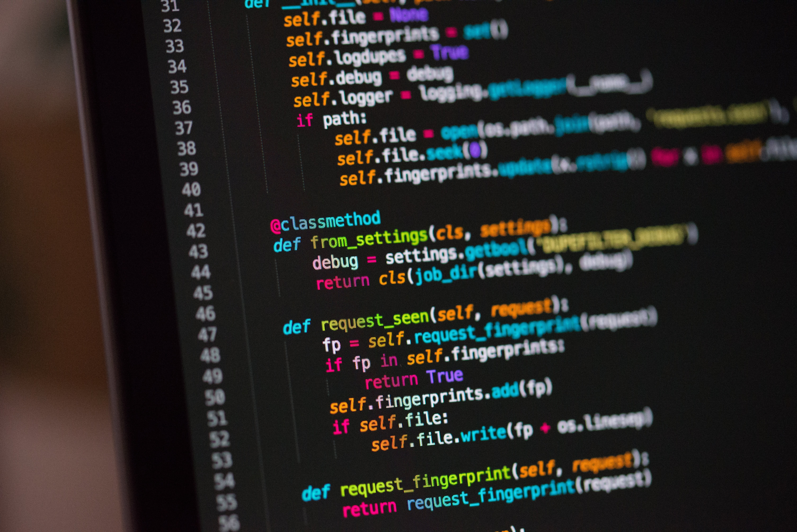

Voir: Ma Formation
Voir: Voyage Humanitaire au Vietnam (En attente de 2024)

Je suis actuellement en première année de BTS Système Numérique option Informatique et Réseau afin de suivre deux de mes grands intérêts : la programmation et la domotique. Je fais parallèlement une option préparatoire à l’école d’ingénieurs ISEN à Brest, me permettant d’intégrer cette même école à l’issue de mon BTS, en apprentissage.
J’ai obtenu mon Baccalauréat Technologique en Sciences de l’industrie et du développement durable avec l’option Système d’Information et Numérique au lycée La Croix Rouge La Salle. Mon intérêt pour le monde numérique, déjà grandissant à l'époque, m’a conduit à suivre une voie technologique.
Ma formation en STI2D m’a permis au fil des deux ans, de participer à des projets et concevoir des
programmes dans le but de rendre fonctionnel des maquettes de robots ou encore de bateaux.
Pour ces projets nous étions amenés à suivre le plus possible des protocoles profesionnels, a
savoir la préparation en amont du projet : diagramme de Gantt, Cahiers des Charge, Répartition des
tâches ou encore planification.
Une des épreuves de mon baccalauréat consistait justement à évaluer l’aptitude à travailler en
équipe, la capacité à fournir un résultat fonctionnel conforme à des contraintes, ainsi que rendre
compte du projet à un jury.
Dans le cadre de mon BTS je suis amené à faire un stage de 6 semaines dans l’entreprise XANKOM, un fournisseur d’accès internet pour les entreprises et particuliers.